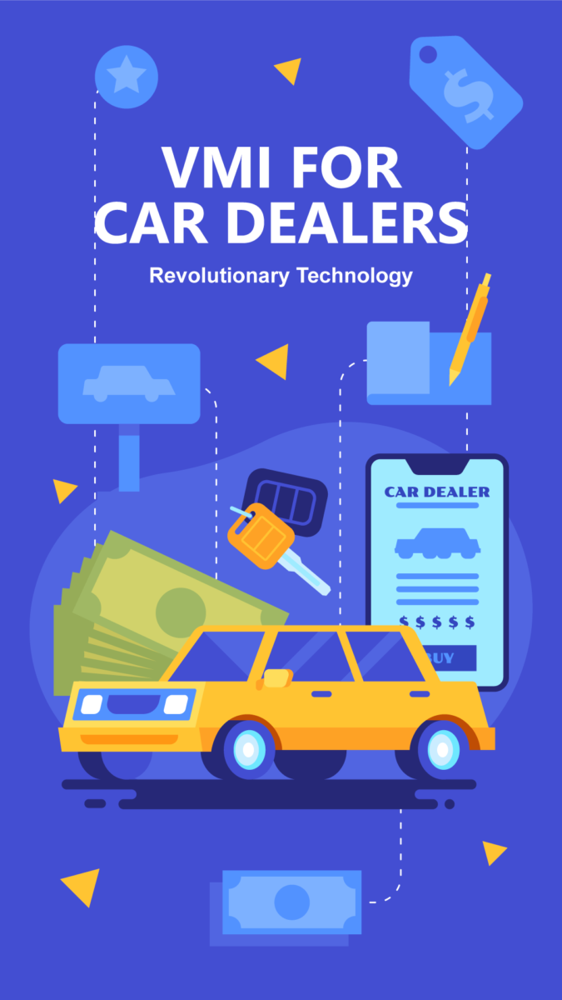

Vehicle Mobile Inspection for Car Dealers
Vehicle Mobile Inspection for Car Dealers
Elevate Vehicle Inspection for vehicle sales and purchases. Vehicle Mobile Inspection for car dealers offers in-depth vehicle assessment, empowering car dealers to avoid potential losses during vehicle purchases and prevent customer disputes.
The automobile business is always changing, and auto dealers are looking for creative ways to improve their processes. The incorporation of mobile vehicle inspections is one such revolutionary technology. This innovation offers not only simplified procedures but also increased transparency and trust between dealerships and their esteemed clients.
Benefits of Mobile Inspection for Car Dealers
Improved Efficiency
Time is a crucial component in the fast-paced world of vehicle sales. Mobile inspections have a revolutionary benefit since they dramatically cut down on the amount of time needed for evaluations. As a result, inventory turns over more quickly, guaranteeing that automobiles arrive at the sales floor in record time.
Higher customer confidence and transparency
The foundation of a successful dealership-customer relationship is transparency. Customers receive thorough, precise information about a vehicle’s condition via mobile inspections. This increased openness fosters trust and gives customers the confidence to make decisions since they are fully informed.
Resource and cost-effectiveness optimization
Mobile inspections optimize resources in addition to cutting down on inspection time. On-site inspection overhead expenses can be greatly reduced for dealerships. This makes it possible for a more strategic use of resources, allowing the dealership to make investments in other important business areas.
Implementing Mobile Inspection Solutions for Car Dealers
Making the Best Technology Partner Selection
A crucial choice is choosing the best inspection platform. Dealerships should thoroughly assess features and capabilities to make sure they meet their unique requirements. A key factor in ensuring easy integration into current operations is compatibility with existing systems.
Onboarding and Training
Success depends heavily on equipping workers with the abilities needed to carry out mobile inspections. A thorough training program provides a smooth transition to this cutting-edge technique, increasing confidence and productivity in the process. The key to leveraging the advantages of mobile inspections is a well-trained staff.
Workflow Integration for Mobile Inspections
Mobile inspections must be fully integrated into the process of purchasing a car in order to be genuinely successful. To do this, certain post-inspection methods must be established. This guarantees a smooth procedure from evaluation to sales, reducing any potential delays or interruptions.

Ensuring Compliance and Quality Assurance
Regulatory Conformity
Compliance with regulatory regulations and industry standards is a must. Dealerships must have thorough processes to reduce any potential hazards brought on by non-compliance. This guarantees that each inspection satisfies the essential regulatory requirements.
Quality Assurance Procedures
Setting and upholding high standards is essential to any successful dealership. Every car will satisfy the dealership’s quality standards thanks to the implementation of strict inspection processes. This not only protects the dealership’s reputation but also guarantees client trust and satisfaction.
Overcoming Challenges
Mobile inspections provide many advantages, but there may also be drawbacks. Initial reluctance from employees and consumers, as well as possible barriers to technology adoption, are common barriers. However, effective methods for reducing these barriers include proactive communication and ongoing feedback loops.
Conclusion
A turning point in the automobile sector has been reached with the incorporation of mobile vehicle inspections. Along with improving operations, it builds a relationship of trust and openness with consumers. By adopting this technology, dealerships put themselves at the fore of a new era in automobile retail, creating the foundation for efficient, customer-focused operations. Take advantage of mobile vehicle inspections and embrace the future.